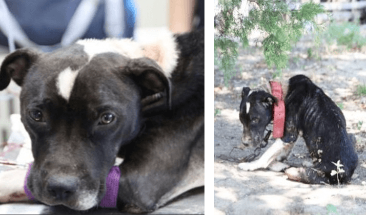

Former Bait Dog Too Depressed To Lift Her Head

Dozens of neglected and severely emaciated dogs are tied up with heavy chains and left with no food or water. When you come throughout a dog-fighting operation, it is no longer a highly sight. Dozens of neglected and severely emaciated puppies are tied up with heavy chains and left with no meals or water.

Sometimes these aggravating experiences scar a canine for life, whilst others nevertheless crave interest and love from humans. Rescuers from the SPCA of Texas ascertained fourteen puppies at a suspected dog-fighting operation in in a position Springs, Texas, in August. When rescuer Madeline Yeaman walked up to the site, all of the puppieshad been leaping and trying her attention. All of the puppies however one.

Thatâs when they observed her. Emaciated and severely hydrated, she used to be knocking at deathâs door. She had a massive collar clamped to her neck that used to be connected to a heavy chain tied to an ancient vehicle axle. She had no refuge for her to cover from the sizzling Texas sun.

She used to be in such awful fitness that she grew to be too susceptible to even move. It took time to get her to stand, for the reason that all she desired to do used to be take a seat there with her head down. The veterinarian examined this bad pup, and stated she had âalmost no blood pumping thru her veins.â

They took her in right now to get her cure started, and named her Gwen Stefani. The first issue they did used to be hose off her cracked, wounded, flea-infested skin. She was once given a couple ofblood transfusions, and of route water and food.

As days went by, Gwen commenced selecting her head up greater and greater till she felt like a canine again. âNo longer used to be Gwen torpid and hopeless,â the SPCA wrote. âShe greets every person with a wiggly body, wagging tail and trademark pit bull smile.

As her physique healed, her spirit started to shine and she began breaking out of her shell. Now she enjoys walking round outdoor and getting showered with love and attention, all of the matters that most puppies take for granted.

âSheâs certainly no longer lacking anything,â Yeaman informed The Dodo. âSheâs acquired human beings loving on her all day long. She receives to go play outdoor all day long. Itâs exceptional what a trade of surroundings and care and human beings can male in a dogâs view of the world.â

Gwen is a very blissful dog, and has seeing that observed a loving home! aaa